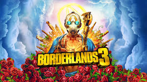

Which Title Ranks Lowest?
Opinions vary, but many fans point to one or more titles as being less successful for reasons like design choices, technical issues, or departures from what made the series great.
Common Picks
- Borderlands (3)
Story critique: Many players found the narrative unfocused and tonally inconsistent compared to earlier entries. The Calypso twins' arc and the game's satire of fame didn't land for some fans, making character motivations feel thin and the emotional core weaker than in Borderlands 2.
- Borderlands: The Pre-Sequel

Loved by some, but criticized by others for limited level design and being more of a niche entry.